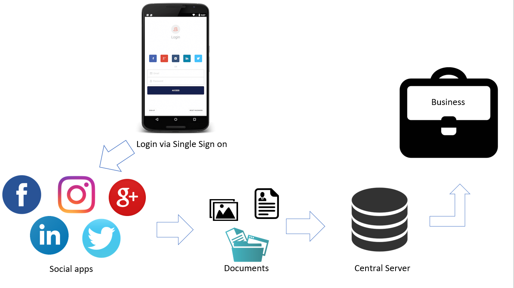
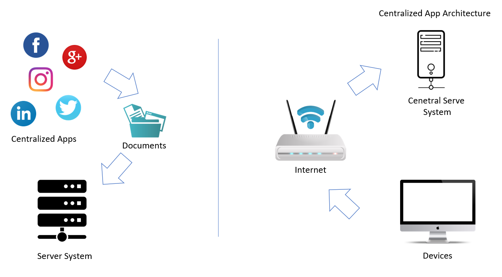
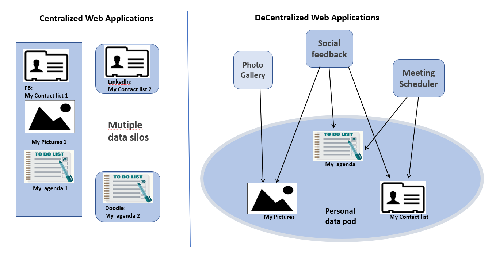
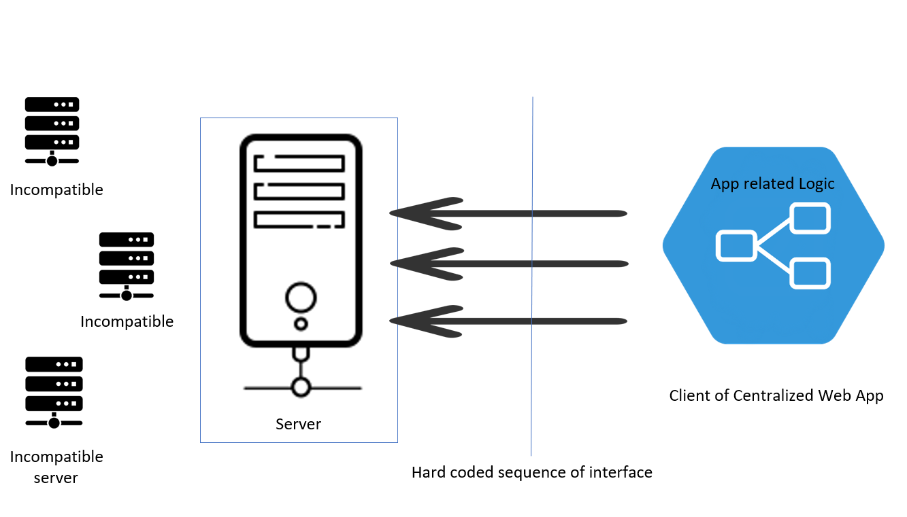
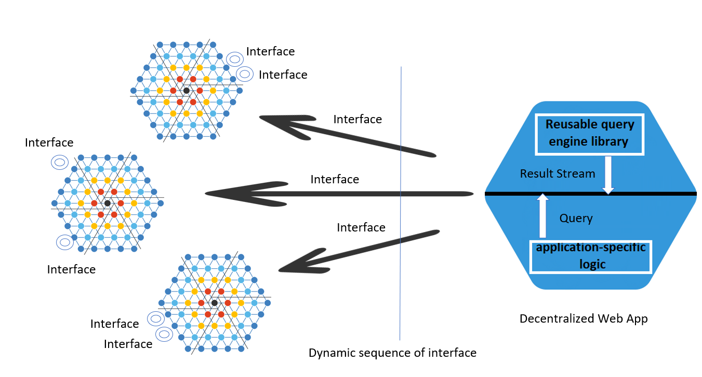
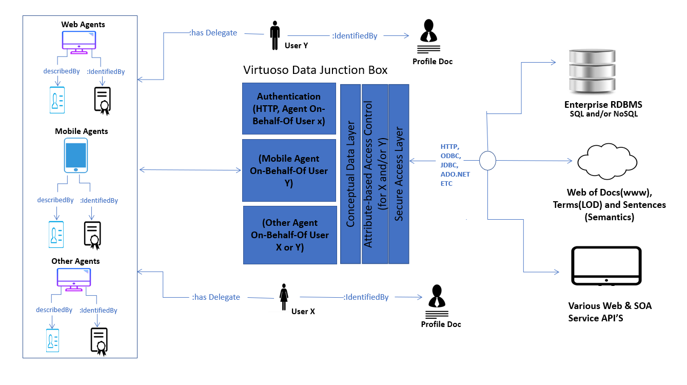

Professorship Distributed and Self-Organizing Systems Technische
Universität Chemnitz Chemnitz, Deutschland
1. Introduction
Now a day’s people are using social applications such as Facebook, Linkedin, Twitter, Instagram and many more. These applications are based on centralized system architecture. When we are using these applications we need to Login for authentication and if you have multiple accounts then the next problem will arrive. Multiple accounts have multiple credentials. After a long period, User will forget credentials and again to recover that account we need a couple of minutes for restoring the data by following long and long procedure. To avoid this problem now we are using Single Sign-On(SSO).
1.1 Single sign-on (SSO)
Single sign-on (SSO) is an authentication process that allows a user to access multiple profiles with one Username and Password as credentials. From where a client accesses multiple resources connected to the network
[1].
SSO can cause more harm than benefits. What makes it so convenient for users is just one UserName and Password for all SSO-enabled applications. It is also one kind of making a threat is possible. You log onto your as smartphones, PC via an application on a single time, and the authentication extends to all the applications you need. That’s Wonderful! Except that who gets a hold of your credentials can access your data[1].
Now it’s easy to do login via single click but within that, your profile details and contact lists are accessed by this third-party APIs. However, these application providing you free services but in front of that your data is sold by these big giant organizations. Your data is the valuable thing which is your ideas, notions, and perception come through the deep mind and When we are using web intentionally or unintentionally we are contributing data to the Data economy which makes more and richer day by day. Your data is the most valuable assets and you should be paid for it. This is the current issues and possible threats in centralized applications.

Figure 1: Current Trends in Web Applications with Data privacy and Security issues.
2. Centralized System
Centralized System Storage data becomes useful when one or more servers need to access the same data. The benefits of centralized storage System is by keeping data in one place, it’s easier to manage both the hardware and the data itself. The Feature of some centralized system solutions is notably redundancy, reliability and faster disk performance. There are several benefits of this Architecture. The first advantage of this architecture is Data can easily portable because it is stored in the one place and second is the data redundancy is
minimal in the centralized database. It has also some disadvantages likewise the data is at one location, it takes more time to search and access data from the database. If there are no database recovery measures in place and a system failure occurs, then all the data in the database will be destroyed[2].
Web application architecture represents how applications, middleware systems, and databases are interacting with each other to ensure that multiple web applications can work together. When a user types in a URL and searches the browser will find the Internet-facing machine the website lives on and requests that particular page. The server then responds by sending files over to the browser. After that, the browser executes those files to show the user requested page.
Now, the user gets access to the particular requested resources or files. Of course, all of these actions are executed within milliseconds. Web apps architecture is critical since the majority of global network traffic, and every single app and device uses web-based communication. It deals with efficiency, scalability, security, and robustness[3].

Figure 2: Centralized System Architecture.
3. Centralized Architecture Vs. Decentralized Architecture
As we can see the diagram for the difference between this architecture. In a centralized architecture, we have a central server system for the storage of the data. So every time it makes a request to the server. In Decentralization, a connection will be established between peers. In peer to peer connection is fast and secure. In centralization, we have different apps and they have a different server so data is distributed on different serves.
Let’s say some contacts are on Facebook and a few are stored in the doodle. Your posts, comments, videos and agenda lists are stored on different apps and you can’t connect or store this data at one place. In decentralization, we have online storage which connects any kind of decentralized apps so users can store the data at the same place and from here user can access data in the sense of reusing existing data. The most common and possible threat was vender-lock in centralization, where when we are using Single Sign-On(SSO) user’s data is taken by the third APIs this gone solved in decentralization.

Figure 3: Centralized Vs Decentralized Architecture With Web Apps [4].
4. Why traditional ways of apps not suitable?
In this following diagram, we can see the traditional way of apps is working and why it is not suitable for decentralization. So if we closely look up a client of centralized web applications then we have here app related specific logic. The logic according to the different web apps. Now, these apps are making interfaces to the server for interaction with the server.
The logic according to the different web apps. Now, these apps are making interfaces to the server for interaction with the server.
The problem in this context is coupled of interfaces according to the individual app which makes a fully functional application. So when we want to interact with one server with another it will give incompatibility. The meanwhile we can’t use one app server for another app. So to make this thing possible and to solve the problems, we are introducing SoLiD technology, semantic web to put the web in decentralization.

Figure 4: Traditional Web Apps not Suitable for Decentralized Architecture
[5].
So to make this thing possible and to solve the problems, we are introducing SoLiD technology, semantic web to put the web in decentralization.
5. Introduction to SoLiD
Solid "(Social Linked Data)" is an ambitious project led by Prof. Tim Berners Lee to have a decentralized web, the founder of the WWW(World Wide Web). Solid aims to provide data privacy and improve Security. Solid Users can decide where to store their own data and decide which apps to manage those data. Data can be images, the Event’s in a Calendar, our activity in a solid POD. POD’s can be in our personal computer, workplace, with any online Solid POD providers[6].
Users are free to store data anywhere and move it any time. A user never needs to sync data as it stays with them and they can give their data and apps permission view or write options in their Solid POD. So, when opening a new app, a user doesn't require to fill in their information every time they open a new app again Solid POD's provides users a decentralized identity, instead of relying upon a third party like (Login via Google or Login via Facebook) user can use their own POD for their authentication.
5.1 SoLiD Specifications
True Data Ownership: User has the freedom to choose where your data resides and who is allowed to access it. We can see in centralized architecture we have a central system to store the data each and every time we have to access data from the central system but in the decentralized app, we are the owner of the pod. In decentralization, the connection will be established by peer 2 peers. Here there is no kind of Central System exists That's why it's secure and super fast[7].
Modular Design: When switching from one app to another app third parties are accessing your data so you are tracked by the vendor. But here applications are decoupled from the data which they produce and the user can avoid vendor lock-in[7].
Reusing existing Data: In a centralized architecture, we have a central system to store the data each and every time we have to access data from the central system. We have multiple accounts on different social apps and each and every time when we are making post for same data(in sense of photo, video or event) the same post will be done for every account and multiple copies will be generated here. To avoid this we have in decentralization, data will be stored in Pod which you can connect to any decentralized application and share your data[7].
Data Reliability: You can select multiple pods for online storage as if one node failure then still you have back up and access from that storage.
Faster Data Transfer: From central server it will take time to upload and download the data suppose you are uploading or downloading large size file may be in gigabits then first you need to make connection with server and if suppose thousands of people trying for the same resource then you will be added into queue so after a few seconds or minutes you will reach to that resource. now suppose you are trying to download 20 GB files then it will take several minutes. Here data will be on your personal pod. You can connect pod to any application and use your data.
5.1.1 Decoupled SoLiD App + POD
Now using Solid framework your data is decoupled and now you can connect your pod with trusted social apps in a decentralized architecture. You can give permission for accessing or denying resource[8].
A WebID is a URI with an HTTP scheme which denotes an Agent in semantic Web from SoLiD Apps. A description of the WebID can be found in the Profile Document, a type of web page that can understand by social network users. When using URIs, it is possible to identify both a thing and a Web document describing the thing.
The WebID URI - “https://Mayura.solid.community/profile/card#me" (containing the #me hashtag) - is an identifier that denotes refers to a person or more generally an agent.
The WebID Profile URI - "https://Mayura.solid.community/profile/card" (without the #me hashtag) - denotes the document describing the person who is the referent of the WebID URI.
WebIDs are used to put the web in Decentralization using vocabularies such as foaf:Knows which allows finding people from the WebID profile graph as well as from WebID profile Document just simply by making friends or finding a friend of friends.[9][10].
5.3 WebID Profile Document
WebId refers to the WebId Profile document in linked data format and parsing by this document we can get user-related information. WebId profile bob as the user has a name, blogs, friends, profile image, links to user preferences and related documents, and lists of public key certificates or other relevant identity credentials.
There are only 3 statements necessary for a valid WebID Profile Document. First is identifying the document as a Foaf:PersonalProfileDocument instance. Second having a Foaf:primaryTopic predicate and third final is having that primary topic be a valid foaf:Agent type, such as Foaf:Person.
Solid WebID profiles may split into multiple RDF resources with different read/write permissions, linked together either via owl:sameAs and rdfs:seeAlso predicates, or via the Solid-specific predicate space:preferencesFile.The solid:preferencesFile link is unusual in that it is a link from public data to private data [12].
Solid currently uses WebID and TLS as its main Authentication. To enable this, WebID Profile documents on Solid-compliant servers. It may contain one or more Public Key Certificate sections, linked with WebId in cert:key predicates.
cert:Key Predicates RDF graphs are generated using vocabularies defined by URIs(Uniform Resource Identifier).
cert:Key will be used to associate a WebID URI with any Public Key. A WebID Profile must contain at least one public key that is associated with the corresponding WebID URI.
cert:RSAPublicKey refers to the class of RSA Public Keys. A RSAPublicKey must specify in both a cert:exponent and cert:modulus property. As the cert:exponent and cert:modulus relations both have as domain a cert:RSAPublicKey, the type of the key can be inferred by the use of those relations and need not be written out explicitly[11][12].
5.4 How Decentralized Apps looks like different?
Now let’s see how decentralized apps looks like different as compared to centralized apps. building a decentralized app required a different app technique. The decentralized web has app based specific logic which makes a reusable query using SPARQL, ldflex, or using rest API which makes an interface with data Pod. so just by that interface, we can connect to the data pod. So pod to store your app related data and connect your pod with any kind of decentralized applications[13].

Figure 7: Decentralized System Architecture [13].
6. Security in SoLiD Apps
We have 2 major steps for Security process.
6.1 Authentication
The process to claim/identify who is the user? There are three methods to do authentication process.
6.1.1 WebID TLS Authentication
Alice: Alice is a person who owns a Server which runs a Service which Bob wishes to Access.
Bob: Bob is a person who uses a Client to connect to Alice's Service, and who is responsible for the private key the Client uses to authenticate to Services. If Bob notices the private key was compromised he needs to take action to disable the public key.
Client: The Client sends a request to a Service listening on a specific port using a given protocol on a given Server. It can request authentication credentials from a KeyStore to send to a server.
Server: A Server is a machine connectable at a Domain name that hosts a number of globally accessible Services.
Certificate Authority(CA): The Certificate Authority checks the Agent’s certificate in the context of what is the content to make trustworthy on the web. Agents are using the knowledge of the CA's public key to verify the statements made by that CA in any of the Certificates it signed. The Services usually identify themselves with Certificates signed by well known and widely deployed CAs available in all agents.
Guard: A Guard is an agent, usually, the client sends a request to server and server decide if it needs to be authorized by looking at rules of access control. If the request requires authorization the guard can first demand authentication of the Client and use the WebID Verifier to check any claimed identities that would allow it to come to an authorization decision. Guard can grant or deny access according to how verified identities satisfy access control rules.
WebID Verifier: WebId Verifier is used for verifying that the subject identified by the WebID is that knows the private key of the given public key. Verifier sees access control rules.
[14].
In order to give the full context of a Client to interact with a Server, we will see the TLS protocol sequence diagram. So as we can see that Bob’s client wants to communicate with Alice’s server and for that TLS connection must establish between them to use the protected resource or protected services. Once TLS is set up then the client can request an HTTP GET, PUT, POST, DELETE resource.
Next will come TLS light service so When it receives a Client Certificate, It simply verifies that the Client knows the private key of the public key published in the Certificate in sense without the CA Based Client Certificate Authentication[15].
In the process, we have Guard which intercept the request just for checking authorization rules for the resource or determines the client is authorized or
not and hence need authentication for that type of request. If it has no restriction then it goes to the protected resource. And if it has
restriction then it follows these steps. The Guard makes the TLS agent to make a Certificate Request to the client.
The TLS layer does this. Because the WebID-TLS protocol does not rely on Certificate Authorities to verify the contents of the Certificate,
the TLS Agent makes a request for the client certificate. The client asks Bob to choose certificate and Bob choose WebId and sends it to the Client.
The TLS Agent now must be verified that the Client relies on the correct possession of the private key[15].
The WebID Certificate is then passed on to the Guard with the provision that the WebID still needs to be verified. The Guard then must ask the Verification Agent to verify that the WebIDs in the WebID Certificate by Identifying the agent who knows the given Public Key. The Verification Agent must extract the Public Key and all the URI from multiple URI entries, which is claimed in the Subject Alternative Name extension of the WebID Certificate.WebId provider must get access to an up to date version of the WebID Profile Graph. This graph may be then be cached to speed up future requests[15].
With the set of verified WebIDs, the Guard can then check if one of them is authorized by the Access Control Rules. If access is granted, then the guard can pass on the request to the protected resource[15].
6.1.2 WebID OIDC
The Solid currently supports the WebID-OIDC method as the primary authentication mechanism. It is based on the OAuth2/OpenID Connect protocol. To understand how the authentication is working in this context let’s look in the diagram[16].
As we can see here Alice wants to use Bob’s resource and in this process how the two servers are exchanging the data briefly described here. First Alice requested for Bob’s resource via Direct Browser request or as AJAX or API Client Request. At this stage, Alice gets 401 with an unauthorized message[16].
Alice now chooses a service provider by clicking on UI. It opens popup.html and from Alice chooses WebID URI or entering Email. In the next step, Alice is redirected to the Authentication provider’s sign In page. Now Alice is requesting now to https://alice.solidtest.space/signin.In next step User Concent Screen will open and Alice is also signed into bob’s server. As Authentication response will come and Alice is now redirected to the requested resource[16].
The server of the Bob is now receiving singed Id Token from alice.solidtest.space that was returned with the response at local authentication time. Now, this is time for deriving WebID and these things are managed by Bob’s server. Bob’s server validating Id Token and extracting WebID from it. Finally, Alice is now signed in to bob.example as user https://alice.solidtest.space/#i. Now Bob’s server confirms solidtest.space and Alice is now WebID OIDC authorized. This how the two servers are involved in the data exchange[16].
Traditional way via Username Password: As we already know the process for authentication via filling the form and checking the credentials. Using this approach we can authenticate the User.
WebID-TLS Delegation:This process is currently in investigation
Phase but for just concept purpose we can investigate further to provide more security[9].
This is an open standard which is from multi-protocol authentication layer that provides some attribute-based access control(ABAC) for the protected resource(HTTP- accessible documents, files, directory or SPARQL named graphs). A Virtuoso Server instance with the needs to be installed on any OS. Once it is installed successfully then Virtuoso server needs to be configured to run on Secure SSL and SQL ports using your own as detailed on HTTPS Listener Endpoint and SQL TLS/SSL Listener Port. A PKCS#12 binary format certificate needs to be generated for storing the server Certificate, any middle certificates, private key into a single encryptable password protected docs. If PKCS#12 not found then must check Operating System Key store/chain or public keys passed with params during connection. We need to understand the following things in very depth to connect HTTP with SQL using ODBC Driver connection
[17].
Virtuoso Authentication Layer (VAL) ACL Setup: It works for two distinct functionalities such as HTTP and SQL. Now VAL
requires the creation of Authorization rules such as access/denied. Access control layer Scope by Virtuoso Realms matrix per basic unit
of ABAC (Attribute Based Access Control) functionality. ABAC ACL can be written by the collection of the RDF language statements to a
special VAL system named graph. This file describes the authorization controls and restrictions[18].
Client Application Setup: To use the generated software agent server certificate needs to be generated or attached with WebID via Subject Alternative Name. The OpenLink software used to create such kind of certificates also possible to use external service to generate the certificate[18].
After finishing the setup of the Virtuoso WebID TLS Delegation, it will provide WebID authentication delegation where user can access virtuoso resource delegates identity authentication to a real Software agent that interacts with the resources. In all the scenario software agent will be identified by the WebID. This kind of delegated identity authentication is expressed by the relationship types such as hasIdentityDelegate and onBehalfOf which is presented by RDF language statements stored in WebID profile documents of the users and software agents[17][18].

Figure 9: WebID TLS Delegation Concept by Virtuoso [17].
6.1.3.1 How does it work?
Delegate’s credentials(X.509 certificate and private key) are used to complete the basic TLS connection. After a successful established connection, the reciprocal relationships in the user profile document is verified by using them to placed the public key that was used successfully in the TLS-handshake. Now resource access is granted following a successful evaluation of the ABAC ACLs which is associated with theWebID of the particular user. The benefit of the WebID authentication delegation is a single X.509 certificate can work as the identity for a software agent used by many users, each of which is uniquely identified by their own WebIDs which are the targets of ABAC-based ACLs[17][18].
6.2 Authorization
The process which defines who allowed to access what?
6.2.1 Web Access Control(WAC)
Web Access Control is a decentralized cross-domain access control system which is made to provide authorization rules to control over on Data. It's concerned with giving access to agents to perform different kinds of operations like read, write, append, etc on resources.
In WAC the resources are identified by URLs, and can refer to any web documents. It is declarative -- access control policies live in regular web resources,
which can be exported or backed easily, using the same mechanism as you would for backing up the rest of your data. Users and groups are also identified by URLs. It is decentralized cross-domain -- All of its components, such as web documents, WebIDs of agents, and even the documents containing the access control policies,can potentially reside on separate domains[9].
7. Demo
For Solid Applications how user can do login via WebID OIDC authentication and how user can Authorize the friend/person or Agent for public and private resources is available in this demo.user also can show the friends and friend of friends. User can create new resources such as file and folders and store the data[16].